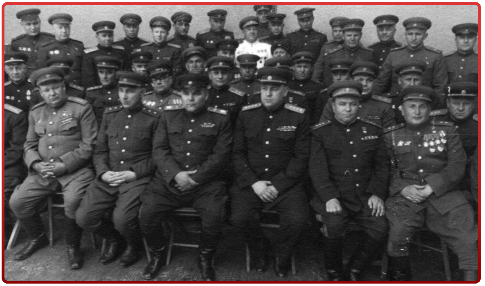

УГОЛОВНЫЕ ДЕЛА ПРОТИВ ВОЕННЫХ
В начале мая 1946 г. стало быстро и активно раскручиваться так называемое «дело авиаторов», невольными инициаторами которого ещё осенью 1945 г. стали младший сын вождя, командир 286-й авиадивизии генерал-майор авиации Василий Иосифович Сталин и выдающийся советский авиаконструктор, заместитель министра авиационной промышленности СССР генерал-полковник авиации Александр Сергеевич Яковлев, передавшие вождю своё письмо о плачевном состоянии военной авиации и очень высокой аварийности новых самолётов. В результате этой «интрижки» ещё в апреле 1946 г. были арестованы главком ВВС РККА главный маршал авиации А.А. Новиков, член Военного совета ВВС генерал-полковник авиации Н.С. Шиманов, главком ВВС Дальневосточного Военного округа маршал авиации С.А.Худяков и бывший нарком авиационной промышленности генерал-полковник А.И.Шахурин, снятый с этой должности ещё в январе 1946 г.Чуть позже, уже в ходе детального расследования знаменитого «трофейного дела» в 1946-1948 гг., были арестованы несколько десятков генералов и старших офицеров Группы Советских войск в Германии, в том числе близкие к Г.К.Жукову генерал-лейтенанты К.Ф.Телегин и В.В. Крюков, вполне правомерно обвинённые в нецелевой растрате армейских фондов и вывозе с оккупированных территорий огромного количества дорогостоящей старинной мебели, картин кисти знаменитых европейских живописцев, гобеленов, столового серебра и драгоценностей.
В январе 1952 г. в результате раскрутки «артиллерийского дела» со своих должностей были сняты, а затем и арестованы заместитель военного министра маршал артиллерии Николай Дмитриевич Яковлев и начальник ГАУ генерал-полковник артиллерии Иван Иванович Волкотрубенко. Новым заместителем военного министра по вооружениям был назначен генерал-полковник артиллерии Митрофан Иванович Неделин, начальником Главного артиллерийского управления стал генерал-полковник артиллерии Сергей Сергеевич Варенцов, а командующим артиллерией был назначен генерал-полковник артиллерии Василий Иванович Казаков.